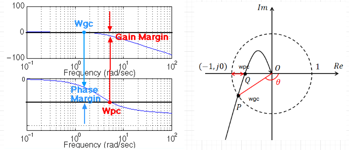

Most PID tuning methods start with time-domain behavior. Increase \(K_p\), reduce overshoot, remove steady-state error, add derivative action, and repeat.
But there is another way to see the problem. Instead of asking what values of \(K_p\), \(T_I\), and \(T_D\) should be tried, we ask where the open-loop frequency response should be at the desired crossover frequency.
That question leads naturally to the Nyquist plot.
The Main Idea
For a unity-feedback system, define the open-loop transfer function as:
Here, \(P(s)\) is the plant, \(C(s)\) is the controller, and \(L(s)\) is the open-loop transfer function.
The Nyquist plot shows the complex value of \(L(j\omega)\) as frequency changes. So instead of looking at gain and phase separately, we look at one point in the complex plane:
The controller changes the plant response by multiplying it:
The Desired Nyquist Point
Choose a desired gain crossover frequency:
At this frequency, the magnitude of the open-loop system should be 1:
This means the desired point lies on the unit circle. Now choose the desired phase margin \(PM\). At crossover, the desired phase is:
Therefore, the desired open-loop value is:
This is the key Nyquist design target. The controller must move the plant point \(P(j\omega_{gc}^{*})\) to this desired point.

Step 1: Evaluate the Plant
At the chosen crossover frequency, evaluate:
This complex number contains both magnitude and phase:
The plant already gives some gain and some phase. The controller only needs to provide what is missing.
Step 2: Required Controller Value
At the design frequency, we want:
Therefore:
This is the whole design problem. The required controller value is a complex number. It has a required magnitude and a required phase.
Step 3: Required Gain
The magnitude requirement is:
Since the desired crossover magnitude is 1:
This is the gain the controller must provide at the chosen frequency.
Step 4: Required Phase
The phase requirement is:
Since \(\angle L^{*}(j\omega_{gc}^{*})=-180^\circ+PM\), we get:
So the controller must provide \(\Delta K\) and \(\Delta \phi\). At this point, PID design becomes a geometric problem.
Nyquist Interpretation
The plant gives a point in the complex plane:
The desired open-loop system needs another point:
The controller is the complex multiplier that moves one point to the other:
So the controller scales the plant point by \(\Delta K\) and rotates it by \(\Delta \phi\).
Choosing the Controller Type
The sign of \(\Delta \phi\) tells us what type of controller is needed.
If \(\Delta \phi > 0\), the controller must rotate the Nyquist point counterclockwise. That means phase lead. Use a PD controller, a PID controller with dominant derivative action, or lead compensation.
If \(\Delta \phi < 0\), the controller must rotate the Nyquist point clockwise. That means phase lag. Use a PI controller or lag compensation.
If both steady-state accuracy and phase lead near crossover are needed, use a full PID controller.
PD Controller Design
A PD controller is:
At \(s=j\omega\):
To match the required phase:
Formulas using \(\tan()\) require radians unless your software explicitly accepts degrees.
This gives a PD controller that provides the required rotation and scaling at \(\omega_{gc}^{*}\).
Practical Note About Derivative Action
The ideal PD controller is useful for analysis, but real derivative action is usually filtered. A more practical form is:
\(N\) is often chosen between 5 and 20. The filter reduces high-frequency noise amplification.
PI Controller Design
A PI controller is:
At \(s=j\omega\):
If \(\Delta \phi < 0\), then:
PID Controller Design
A PID controller is:
At \(s=j\omega\):
To reduce the number of unknowns, define:
Substituting into the phase condition:
The controller magnitude at the design frequency becomes:
This gives a PID controller that matches the required complex value at the chosen design frequency.
Example
Consider the plant:
Choose \(\omega_{gc}^{*}=1\ \text{rad/s}\) and \(PM=60^\circ\).
Evaluate the Plant
At \(s=j1\):
Desired Nyquist Point
The desired open-loop phase is:
Since crossover magnitude must be 1:
Required Controller
The required controller value is:
Therefore, \(\Delta K=1.414\) and \(\Delta \phi=15^\circ\). The controller must scale the plant point by 1.414 and rotate it by \(15^\circ\) counterclockwise. Because the required phase is positive, a PD controller is a good choice.
PD Design
Convert \(15^\circ\) to radians before using \(\tan()\):
The controller is:
Check the Design
At \(1\ \text{rad/s}\), the controller gives \(|C(j1)|=1.414\) and \(\angle C(j1)=15^\circ\). The plant gives \(|P(j1)|=0.707\) and \(\angle P(j1)=-135^\circ\).
So the compensated loop crosses the unit circle with phase \(-120^\circ\). That gives \(PM=60^\circ\), so the design condition is satisfied.
Connecting Nyquist to Bode
The Nyquist plot and the Bode plot show the same frequency-response information. They just show it differently.
The Bode plot separates the frequency response into magnitude and phase:
The Nyquist plot combines them into one complex curve:
At gain crossover, \(|L(j\omega_{gc})|=1\). On the Bode plot, this is where the magnitude crosses 0 dB. On the Nyquist plot, this is where the curve crosses the unit circle.
The phase margin is also the same. On the Bode plot, it is measured from the phase curve to \(-180^\circ\) at crossover. On the Nyquist plot, it is the angle between the negative real axis and the open-loop point on the unit circle.

From Time-Domain Specs to Phase Margin
In practice, \(PM\) and \(\omega_{gc}^{*}\) are not chosen randomly. Usually the design starts from time-domain requirements such as maximum overshoot, settling time, and rise time.
For a dominant second-order closed-loop approximation, the percent overshoot \(M_p\%\) gives the damping ratio \(\zeta\). First convert percent overshoot to a fraction:
Then compute:
For example, \(M_p\%=10\%\) means \(M_p=0.10\), which gives approximately \(\zeta=0.59\).
Once \(\zeta\) is known, an approximate phase margin can be estimated from:
This formula gives \(PM\) in radians unless your software uses degrees. Convert it to degrees when using it in the Nyquist design equations.
Using Settling Time
The settling time can be used to estimate the natural frequency. For the common 2% settling-time criterion:
For the 5% criterion, a common approximation is:
Using Rise Time
Rise time can also be used as a rough bandwidth estimate. A simple approximation is:
These formulas are approximate, but they give a useful starting point for choosing the desired crossover frequency. In many loop-shaping designs, \(\omega_{gc}^{*}\) is selected near the desired closed-loop bandwidth, often close to the estimated \(\omega_n\), then adjusted for robustness, noise, actuator limits, and plant uncertainty.
Practical Flow
- Start with desired \(M_p\%\), \(t_s\), and possibly \(t_r\).
- Use \(M_p\%\) to estimate \(\zeta\).
- Use \(\zeta\) to estimate the desired \(PM\).
- Use \(t_s\) or \(t_r\) to estimate the desired speed and choose \(\omega_{gc}^{*}\).
- Use \(PM\) and \(\omega_{gc}^{*}\) in the Nyquist formulas above.
So yes: we often receive time-domain requirements first. Then we translate them into a frequency-domain target: desired phase margin and desired crossover frequency.
Important Practical Notes
This method is clean, but it should not be used blindly. The chosen crossover frequency matters. A higher crossover frequency usually gives a faster response, but it may also increase noise sensitivity and require more control effort.
The desired phase margin also matters. A larger phase margin usually gives a more damped response, but it may reduce bandwidth.
Derivative action should usually be filtered. Integral action improves steady-state accuracy, but it can reduce phase margin if it is too aggressive.
After designing the controller, always check closed-loop stability, step response, control effort, actuator saturation, noise sensitivity, and robustness to plant uncertainty. Nyquist design gives the target. Simulation and validation confirm whether the target is practical.
Final Insight
PID design can be understood as a Nyquist shaping problem. At the desired crossover frequency, the plant gives \(P(j\omega_{gc}^{*})\). The designer chooses the desired open-loop point:
The controller must provide:
So PID design reduces to scaling and rotation:
The Nyquist plot shows the geometry. The Bode plot shows the same result as gain and phase. Together, they give a practical way to design PID controllers instead of guessing them.